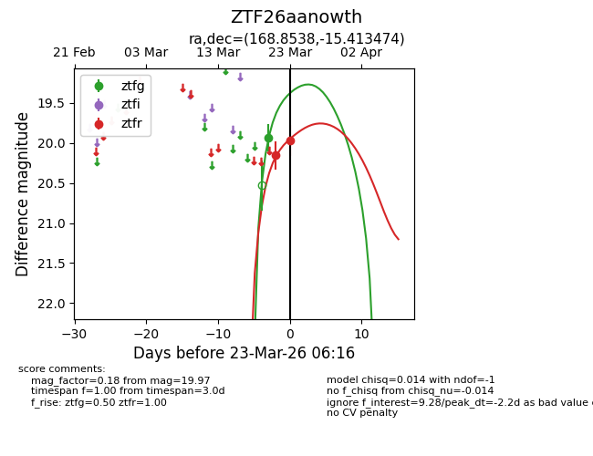
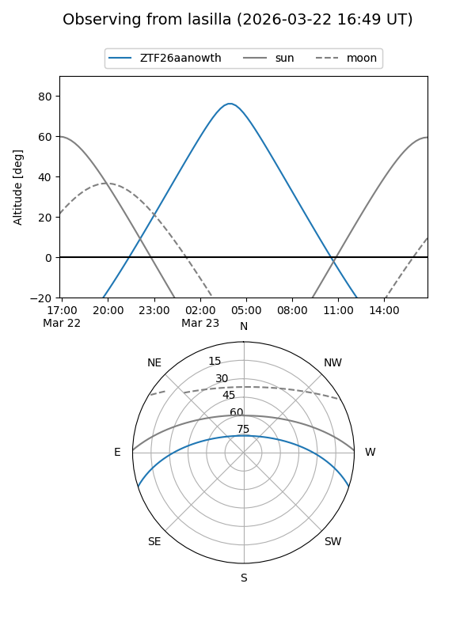
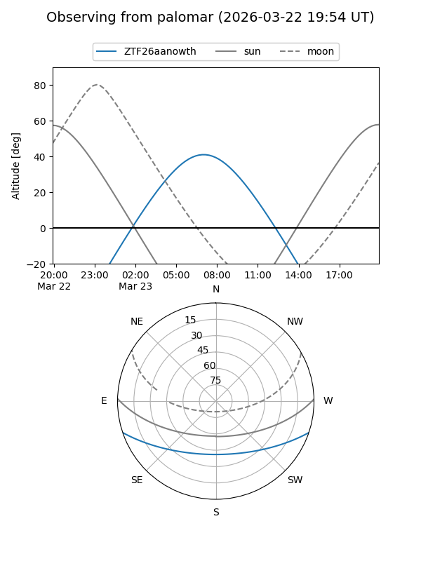
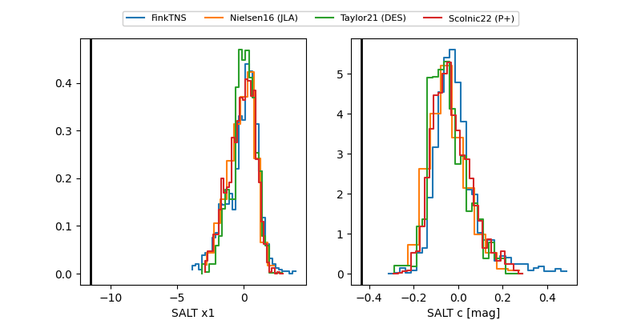

ZTF26aanowth
Target ZTF26aanowth at 2026-03-23 06:18
Aliases and brokers:
FINK: link
Lasair: link
ALeRCE: link
alt names
ZTF26aanowth (ztf,fink_ztf)
Coordinates:
equatorial (ra, dec) = 168.8538,-15.41347
equatorial (HMS+DMS) = 11:15:24.92,-15:24:48.51
galactic (l, b) = (271.3561,+41.49654)
Flags:
Photometry:
last ztfg=19.94, ztfr=19.97
1 ztfg, 2 ztfr detections
Lightcurve

Visibility


Additional plots
